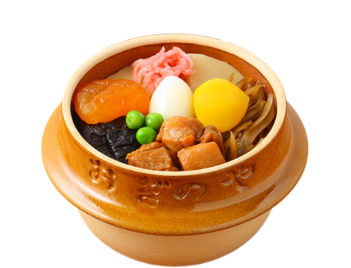
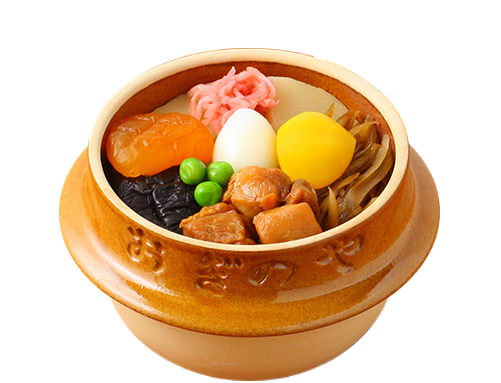

Available at Yonezawa Station, along with others on the Yamagata
Shinkansen line, for 1,250 yen.
This beef-bowl style bento box features fluffy Domannaka rice made
in Yamagata Prefecture topped with minced beef and sauteed beef
slices cooked with a special tare sauce.
The bento was launched the year after opening the Yamagata
Shinkansen and is now an ekiben train station lunchbox that is
famous throughout Japan.
source
Available at Tokyo Station for 1,380 yen.
Makunouchi bento means "between-act bento", referring to
bento's origins as a meal for theater-goers. Now, makunouchi
generally refers to larger bento that attempt to contain every
flavor and ingredient that is quintessential to Japanese taste.
You can find some form of makunouchi at nearly every railstation
in Japan.
This particular bento's unique feature is gindara or
sablefish, served grilled and seasoned with a yuzu-miso sauce.
source
Available at Nishi-Akashi Station for 1,080 yen.
This famous bento features octopus, conger eel, and seasonal
vegetables packaged in a special clay pot made to look like
one of the barrel-shaped octopus traps traditionally used in
Japan.
The name hipparidako is an expression, literally
meaning "pulled octopus", which is used to refer to someone who is
so popular that they continually receive invitations and offers
like an octopus beingd pulled in different directions.
source
Available at Odate Station for 1,200 yen.
This bento features Hinai Jidori chicken —
the most famous chicken in Japan and known for its strong flavor.
These chickens are raised primarily in the northern areas of Akita
prefecture and are raised very comfortably, similar to Wagyu beef
cows.
source
Available at Mori Station for 880 yen.
This ekiben contains two small squids that are stuffed with a mixture of
glutinous and non-glutinous rice that provides a unique chewiness.
The sweet and salty sauce that the squid is cooked with seeps into
the rice on the inside, giving it a full flavor.
Ikameshi was first created in 1941, making it one of the older
ekiben still available. It is still very popular today and its
especially desired at ekiben festivals since Mori's location in
Hokkaido is fairly far from the rest of Japan.
source1
source2
Available at Yokokawa Station for 1,300 yen.
This ekiben features nine colorful ingredients nestled inside a
Mashiko earthenware pot. For over sixty years this has been one of
Japan's favorite ekiben.
The rice used in this dish is called chameshi or "tea rice"
as the rice is cooked in strongly steeped tea. It is often mixed
with dried soybeans.
source
Available at Niigata Station for 1,380 yen.
This ekiben contains four types of seafood over vinegar-seasoned rice,
prominently topped with a large and sweet tamagoyaki — a
Japanese rolled omelet.
source
Available at JR East Stations in Miyagi Prefecture for 1,300 yen.
This ekiben features shrimp tempura, a trio of onigiri, and an
assortment of other classic Japanese flavors.
The bento is presented in a bamboo basket which is meant to evoke
the hospitality of famous Naruko Onsen — a Japanese hot
springs resort found in the north-western area of Miyagi.
source
Pull the lid off to see what's inside!
Minced and sauteed beef over rice.
Assortment of small sides, including seaweed (nori), fish cake, egg omelet (tamago), and pickled ginger.
A large portion of rice featuring a pickled plum in the center, evoking the Japanese flag. On the side is some pickled seaweed (nori).
Gindara, or sablefish, alongside omelet (tamago), kamaboko fish cakes, pickled eggplant, fried chicken with yuzu pepper seasoning, and soy-mirin seasoned assorted vegetables (butterbur, burdock, carrot, shiitake mushroom, lotus root, pumpkin, peas, konnyaku and taro root).
Octopus (tako), conger eel (unagi), and seasonal vegetables.
Hinai Jidori chicken cooked in 2 ways: "salt-grilled" and "flavored ground chicken" served on top of rice and scrambled eggs.
An assortment of pickled side dishes.
Squid stuffed with chewy rice and cooked with a sweet and salty sauce.
Chameshi (Koshihikari rice), chicken, burdock root, shiitake mushroom, bamboo shoot, quail egg, chestnut, apricot, green peas and red ginger.
Large rolled omelete (tamagoyaki) topped with minced shrimp.
From the top-left in clockwise order: squid, shrimp, eel (unagi), and gizzard shad (kohada). This is all served over vinegar-seasoned rice with a small side of pickled ginger.
A trio of onigiri — stuffed rice balls — that each have different fillings and different rice.
Chestnut, omelete (tamago), and seaweed (nori).
Breaded and fried shrimp (shrimp tempura) along with a few other fried foods.
An assortment of steamed and pickled vegetables.